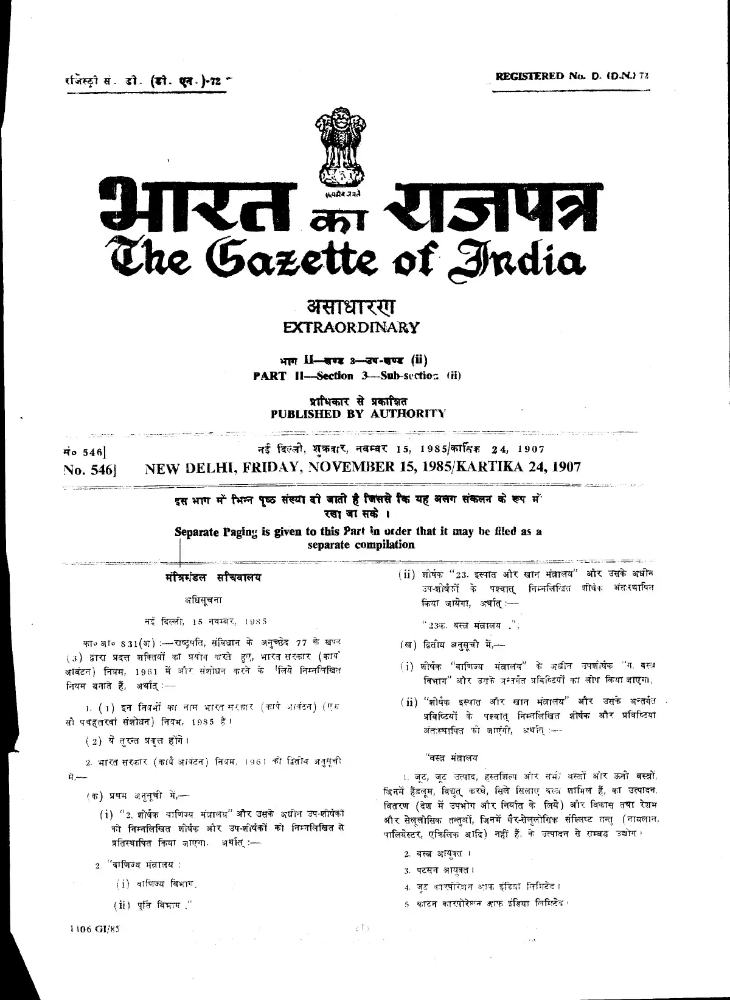
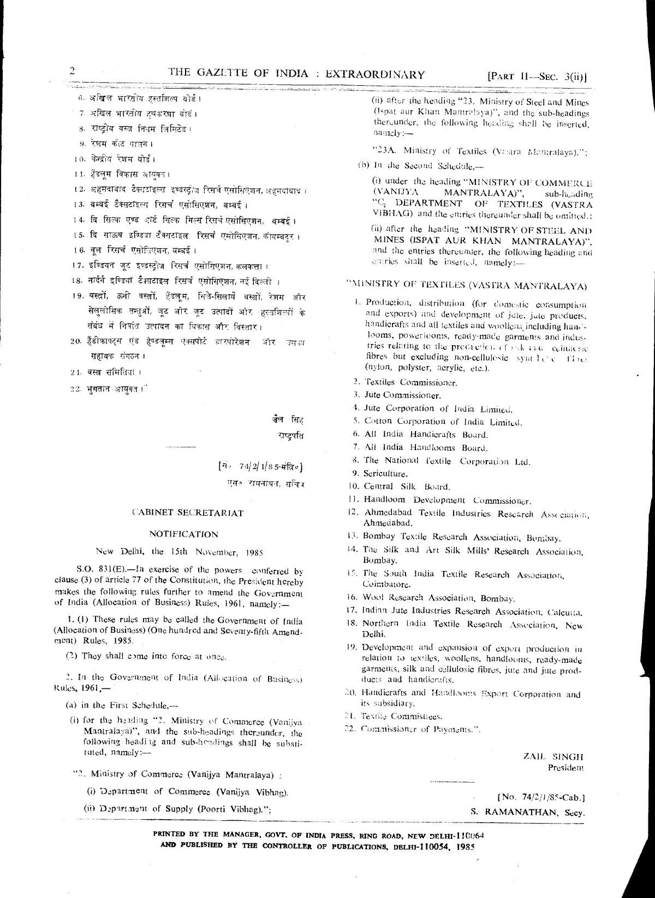

Amendment #175 (S.O. 831(E), 1985)
4 changes: 2 to the First Schedule, 2 to the Second Schedule. 4 applied
What it did to the ministries
- spun offMinistry of Textiles is separated from Ministry of Commerce (21 subjects) change 1, 2, 3, 4 · histories: Commerce, Textiles
The order, page by page
Page 1 of 2

Page 2 of 2

1234Schedule 1 › Ministry of Commerce
- 2. Ministry of Commerce
- i. Department of Commerce
- ii. Department of Supply
applied at schedule 1 › ministry 2 in the Rules after #175
after Schedule 1 › Ministry of Steel and Mines
- 23A. Ministry of Textiles
applied at schedule 1 › ministry 23A in the Rules after #175
Schedule 2 › MINISTRY OF COMMERCE › DEPARTMENT OF TEXTILES
applied at schedule 2 › ministry MINISTRY OF COMMERCE › department C in the Rules after #175
after Schedule 2 › MINISTRY OF STEEL AND MINES
- MINISTRY OF TEXTILES
- 1. Production, distribution (for domestic consumption and exports) and development of jute, jute products. handicrafts and all textiles and woollens including handlooms, powerlooms, ready-made garments and industries relating to the production of sak the coliticsie fibres but excluding non-cellulosic…
- 2. Textiles Commissioner.
- 3. Jute Commissioner.
- 4. Jute Corporation of India Limited.
- 5. Cotton Corporation of India Limited.
and 17 more
- 6. All India Handicrafts Board.
- 7. All India Handlooms Board.
- 8. The National Textile Corporation Ltd.
- 9. Sericulture.
- 10. Central Silk Board.
- 11. Handloom Development Commissioner.
- 12. Ahmedabad Textile Industries Research Association Ahmedabad.
- 13. Bombay Textile Research Association, Bombay.
- 14. The Silk and Art Silk Mills' Research Association Bombay.
- 15. The South India Textile Research Association Coimbatore.
- 16. Wool Research Association, Bombay.
- 17. Indian Jute Industries Research Association, Calcutta.
- 18. Northern India Textile Research Association, New Delhi.
- 19. Development and expansion of export production in relation to textiles, woollens, handlooms, ready-made garments, silk and cellulosic fibres, jute and jute prodducts and handicrafts.
- 20. Handicrafts and Handlooms Export Corporation and its subsidiary.
- 21. Textile Commistrees.
- 22. Commissioner of Payments.
applied at schedule 2 › ministry MINISTRY OF TEXTILES in the Rules after #175
How this document was read
Edits to the reading
| Date | By | Edit | Before → after |
|---|---|---|---|
| 11 November 2026 | mukundesh | word corrected |
From the Government of India (Allocation of Business) Rules, 1961 and their amendments, as published by the Cabinet Secretariat (cabsec.gov.in), read by orgpedia. The readings of the older scanned gazettes have known gaps.